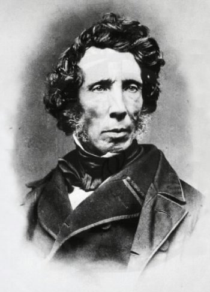

La química orgánica constituyó o se instituyó como disciplina en los años treinta. El desarrollo de nuevos métodos de análisis de las sustancias de origen animal y vegetal, basados en el empleo de disolventes, como el éter o el alcohol, permitió el aislamiento de un gran número de sustancias orgánicas que recibieron el nombre de "principios inmediatos". La aparición de la química orgánica se asocia a menudo al descubrimiento, en 1828, por el químico alemán Friedrich Wöhler, de que la sustancia inorgánica cianato de amonio podía convertirse en urea, una sustancia orgánica que se encuentra en la orina de muchos animales. Antes de este descubrimiento, los químicos creían que para sintetizar sustancias orgánicas, era necesaria la intervención de lo que llamaban ‘la fuerza vital’, es decir, los organismos vivos. El experimento de Wöhler2 rompió la barrera entre sustancias orgánicas e inorgánicas. Los químicos modernos consideran compuestos orgánicos a aquellos que contienen carbono e hidrógeno, y otros elementos (que pueden ser uno o más), siendo los más comunes: oxígeno, nitrógeno, azufre y los halógenos.
Historia ↑

En 1856, sir William Henry Perkin, mientras trataba de estudiar la quinina, accidentalmente fabricó el primer colorante orgánico ahora conocido como malva de Perkin.3
La diferencia entre la química orgánica y la química biológica es que en la química biológica las moléculas de ADN tienen una historia y, por ende, en su estructura nos hablan de su historia, del pasado en el que se han constituido, mientras que una molécula orgánica, creada hoy, es sólo testigo de su presente, sin pasado y sin evolución histórica.4
Cronologia ↑
Artículo principal: Cronología de la Química orgánica
1675: Lémery clasifica los productos químicos naturales, según su origen en minerales, vegetales y animales
1784: Antoine Lavoisier demuestra que todos los productos vegetales y animales están formados básicamente por carbono e hidrógeno y, en menor proporción, nitrógeno, oxígeno y azufre
1807: Jöns Jacob Berzelius clasifica los productos químicos en:
Orgánicos: los que proceden de organismos vivos.
Inorgánicos: los que proceden de la materia inanimada.
1816: Michel Eugène Chevreul prepara distintos jabones a partir de diferentes fuentes de ácidos grasos y diversas bases, produciendo así distintas sales de ácidos grasos (o jabones), que no resultaron ser más que productos orgánicos nuevos derivados de productos naturales (grasas animales y vegetales).
1828: Friedrich Wöhler, a partir de sustancias inorgánicas y con técnicas normales de laboratorio, sintetizó la sustancia urea, la segunda sustancia orgánica obtenida artificialmente, luego del oxalato de amonio.
imagen con ruta relativa:
imagen con ruta absoluta:

1856 : Sir William Perkin sintetiza el primer colorante orgánico por accidente.
Primeros Compendios ↑
La tarea de presentar la química orgánica de manera sistemática y global se realizó mediante una publicación surgida en Alemania, fundada por el químico Friedrich Konrad Beilstein (1838-1906). Su Handbuch der organischen Chemie (Manual de la química orgánica) comenzó a publicarse en Hamburgo en 1880 y consistió en dos volúmenes que recogían información de unos quince mil compuestos orgánicos conocidos. Cuando la Deutsche chemische Gesellschaft (Sociedad Alemana de Química) trató de elaborar la cuarta reedición, en la segunda década del siglo XX, la cifra de compuestos orgánicos se había multiplicado por diez. Treinta y siete volúmenes fueron necesarios para la edición básica, que aparecieron entre 1916 y 1937. Un suplemento de 27 volúmenes se publicó en 1938, recogiendo información aparecida entre 1910 y 1919. En la actualidad, se está editando el Fünftes Ergänzungswerk (quinta serie complementaria), que recoge la documentación publicada entre 1960 y 1979. Para ofrecer con más prontitud sus últimos trabajos, el Beilstein Institut ha creado el servicio Beilstein On line, que funciona desde 1988. Recientemente, se ha comenzado a editar periódicamente un CD-ROM, Beilstein Current Facts in Chemistry, que selecciona la información química procedente de importantes revistas. Actualmente, la citada información está disponible a través de internet.
El alma de la química orgánica: el carbono ↑
La gran cantidad de compuestos orgánicos que existen tiene su explicación en las características del átomo de carbono, que tiene cuatro electrones en su capa de valencia: según la regla del octeto necesita ocho para completarla, por lo que forma cuatro enlaces (valencia = 4) con otros átomos. Esta especial configuración electrónica da lugar a una variedad de posibilidades de hibridación orbital del átomo de carbono (hibridación química).
La molécula orgánica más sencilla que existe es el metano. En esta molécula, el carbono presenta hibridación sp3, con los átomos de hidrógeno formando un tetraedro.
El carbono forma enlaces covalentes con facilidad para alcanzar una configuración estable, estos enlaces los forma con facilidad con otros carbonos, lo que permite formar frecuentemente cadenas abiertas (lineales o ramificadas) y cerradas (anillos).